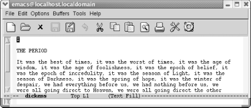
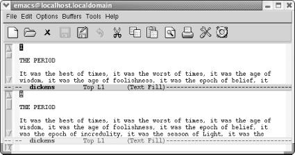
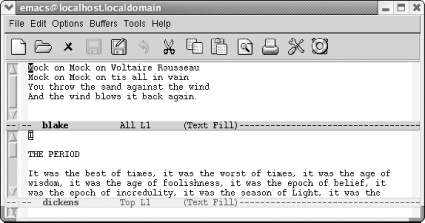
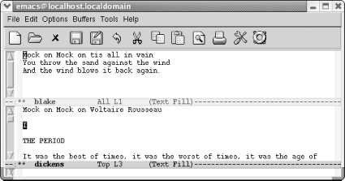

4.3. Working with Windows
Windows are areas on the screen in
which Emacs displays the buffers that
you are editing. You can have multiple windows on the screen at one
time, each displaying a different buffer or different parts of the
same buffer. Granted, the more windows you have, the smaller each one
is; unlike GUI windows, Emacs windows can't overlap,
so as you add more windows, the older ones shrink. The screen is like
a pie; you can cut it into many pieces, but the more pieces you cut,
the smaller they have to be. You can place windows side-by-side, one
on top of the other, or mix them. Each window has its own mode line
that identifies the buffer name, the modes you're
running, and your position in the buffer. To make it clear where one
window begins and another ends, mode lines are usually shaded.
As we've said, windows are not buffers. In fact, you
can have more than one window on the same buffer. Doing so is often
helpful if you want to look at different parts of a large file
simultaneously. You can even have the same part of the buffer
displayed in two windows, and any change you make in one window is
reflected in the other.
The difference between buffers and windows becomes important when you
think about marking, cutting, and pasting text. Marks are associated
with buffers, not with windows, and each buffer can have only
one
mark. If you go to another window on the same buffer and set the
mark, Emacs moves the mark to the new location, forgetting the place
you set it last.
As for cursors, you have only
one
cursor, and the cursor's location determines the
active window. However, although there is only one cursor at a time,
each window does keep track of your current editing location
separately—that is, you can move the cursor from one window to
another, do some editing, jump back to the first window, and be in
the same place. A window's notion of your current
position (whether or not the cursor is in the window) is called the
point. Each window has its own point.
It's easy to use the terms
point and cursor
interchangeably—but we'll try to be specific.
You can create horizontal windows or vertical windows or both, but
personally we place vertical windows with the more advanced esoterica
near the end of the chapter. Here we'll discuss
creating horizontal windows, finding a file in a new window, and
deleting windows.
4.3.1 Creating Horizontal Windows
The most commonly used
window command is C-x 2 (for split-window-vertically). This command splits
the current window into two, horizontally oriented windows. You can
repeat this command to split the screen into more horizontal windows.
|
Initial state:
| |

| |
Editing our trusty dickens buffer.
|
|
Type: C-x 2
| |

| |
The screen is divided into two horizontal windows; the mode line
demarcates each window.
|
You can also have Emacs
set up
windows
for you when you start a session. If you want to edit two files in
horizontal windows, specify their filenames when you start Emacs at a
command prompt. For example, if you wanted to edit
dickens and joyce, you
would type emacs dickens joyce and
Emacs would display these files in two horizontal windows. If you try
this with more than two files, Emacs displays two horizontal windows,
with a file in one and a list of buffers in the other.
A number of the "other window"
commands are just the ordinary command with a 4
inserted in it. For example, to find a file in another
window, type C-x 4 f. (If only one
window is currently open, Emacs opens another one.) To select a
different buffer in another window, type C-x 4
b. Many users find these commands preferable to the normal
C-x C-f and C-x b commands because they save you a step:
you need not move to the window, give a command, and move back.
Once you've got multiple windows open,
it's helpful to be able to scroll them without
moving there. To scroll the other window, type C-M-v.
4.3.2 Moving Between Windows
To move from one window to
another, type C-x o (o
stands for other in this command). If you have
more than two windows displayed, Emacs moves from one to the next.
There's no way to specify which window to move to,
so you may have to type C-x o a few
times to get to the one you want if you have more than two windows
displayed. (You can also click your mouse in a window if
you're using the GUI version.)
Now that you can create windows and can move between them, what else
can you do? Practically anything. With our two windows on
dickens open, one on top of the other.
Initially, both of these windows are looking at the same file.
|
Type: C-x 2
| |
| |
Two windows open on dickens.
|
We can give any editing commands we want within either window. We can
move back and forth in one window without affecting the other.
Let's see what happens if we want to edit another
file.
|
Type: C-x C-f blake
| |

| |
Now you have two windows, two buffers, and two files.
|
By using C-x o, we can edit one file
and then the other. We can kill text from one buffer and yank it back
in another. For example, let's move the first line
of Blake's poem to the top of the
dickens buffer.
|
Type: C-k C-k C-x o M-< C-y Enter
| |

| |
The Blake text has been yanked into the dickens
buffer.
|
Editing with multiple buffers in
separate windows
is particularly useful if, for example, you want to copy material
from one file to another or if you want to read a file containing
reference material while editing another. Programmers often need to
look at several different files at the same time—for example, a
header file and a code file, or a function call site and the routine
that's being called. Once you get used to the
commands for moving between different windows, you may spend most of
your time with two or three windows on your screen.
4.3.3 Getting Rid of Windows
Deleting a window only means that
it
isn't displayed anymore; it doesn't
delete any of the information or any of your unsaved changes. The
underlying buffer is still there, and you can switch to it using
C-x b. To delete the window
you're in, type C-x
0 (zero). If you want to delete all windows but the one
you're working on, type C-x
1 (one), meaning "make this my one and
only window." As you'd expect, the
remaining window "grows" to fill up
the rest of the space. You can also delete all windows on a certain
buffer by typing: M-x delete-windows-on Enter
buffername Enter.
|